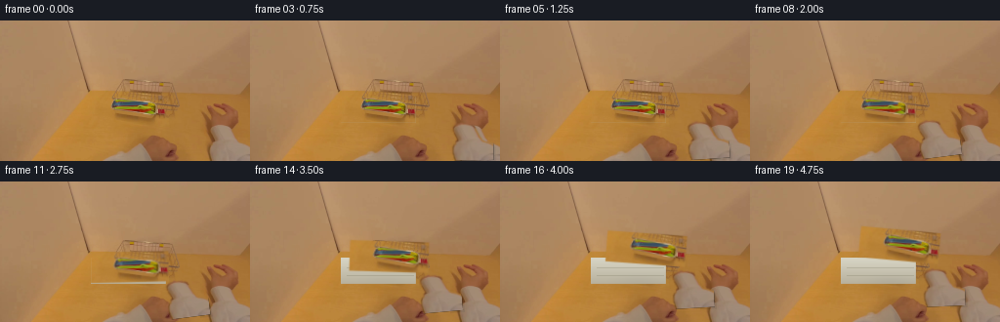
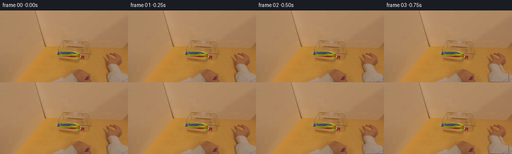

CODING AGENTS AS PIXEL WORLD MODELS
traex/DeepSeek-V4.1-Flash · common50_0016
点击播放 · 原生 RGB 像素
此结果可播放，但该运行尚未通过最终提交审核。页面展示不代表评测通过。
逐轮保存的候选
回放视频、检查图与代码变化。
每份候选均可单独播放。实际图片检查记录在下方工具轨迹中。
候选 01播放与检查图
点击播放 · 原生 RGB 像素


展开代码变化
--- 上一保存版本
+++ 本次保存版本
@@ -0,0 +1,248 @@
+"""Deterministic 20-frame continuation for the utensil-removal scene."""
+
+from pathlib import Path
+
+import cv2
+import numpy as np
+from PIL import Image
+
+import artifact_io
+
+
+CASE = Path(__file__).resolve().parent
+N_FRAMES = 20
+WIDTH = 256
+HEIGHT = 144
+
+
+def smoothstep(x):
+ x = np.clip(x, 0.0, 1.0)
+ return x * x * (3.0 - 2.0 * x)
+
+
+def warp_rgba(rgba, matrix, out_shape=(HEIGHT, WIDTH)):
+ """Warp a premultiplied RGBA layer with a small, stable anti-aliased filter."""
+ return cv2.warpAffine(
+ rgba,
+ matrix,
+ (out_shape[1], out_shape[0]),
+ flags=cv2.INTER_LINEAR,
+ borderMode=cv2.BORDER_CONSTANT,
+ borderValue=(0, 0, 0, 0),
+ )
+
+
+def make_utensil_layer(image):
+ """Separate the colorful utensil bundle from the table and basket."""
+ rgb = image.astype(np.float32)
+ r, g, b = rgb[..., 0], rgb[..., 1], rgb[..., 2]
+ yy, xx = np.mgrid[:HEIGHT, :WIDTH]
+
+ # The bundle occupies the shallow tray opening. Saturation finds most of
+ # it; the soft bounds keep the pale tray rim and wire basket out.
+ hsv = cv2.cvtColor(image, cv2.COLOR_RGB2HSV)
+ color = (
+ (hsv[..., 1] > 86)
+ & (hsv[..., 2] > 48)
+ & (xx >= 91)
+ & (xx <= 168)
+ & (yy >= 75)
+ & (yy <= 103)
+ )
+ color = cv2.morphologyEx(
+ color.astype(np.uint8), cv2.MORPH_CLOSE, np.ones((3, 3), np.uint8)
+ )
+ color = cv2.dilate(color, np.ones((3, 3), np.uint8), iterations=1)
+
+ # A very small hand-authored enclosure fills the pale utensil bodies
+ # between saturated colored patches without taking the tray.
+ bundle_poly = np.array(
+ [[95, 82], [105, 78], [124, 77], [145, 79], [163, 83],
+ [166, 89], [161, 98], [149, 102], [130, 102], [111, 99],
+ [99, 94], [94, 88]],
+ dtype=np.int32,
+ )
+ enclosure = np.zeros((HEIGHT, WIDTH), np.uint8)
+ cv2.fillPoly(enclosure, [bundle_poly], 1)
+ enclosure = cv2.erode(enclosure, np.ones((3, 3), np.uint8), iterations=1)
+ alpha = np.maximum(color, enclosure)
+
+ # Remove isolated table-color leakage and retain a coherent utensil group.
+ count, labels, stats, _ = cv2.connectedComponentsWithStats(alpha, 8)
+ clean = np.zeros_like(alpha)
+ for index in range(1, count):
+ if stats[index, cv2.CC_STAT_AREA] >= 20:
+ clean[labels == index] = 1
+ alpha = cv2.GaussianBlur(clean.astype(np.float32), (3, 3), 0.55)
+
+ rgba = np.zeros((HEIGHT, WIDTH, 4), np.uint8)
+ rgba[..., :3] = image
+ rgba[..., 3] = np.clip(alpha * 255.0, 0, 255).astype(np.uint8)
+ return rgba, alpha
+
+
+def make_hand_layer(image):
+ """Extract the right hand while preserving its original soft highlights."""
+ rgb = image.astype(np.int16)
+ r, g, b = rgb[..., 0], rgb[..., 1], rgb[..., 2]
+ yy, xx = np.mgrid[:HEIGHT, :WIDTH]
+ mask = (
+ (b > 64)
+ & (r > 105)
+ & ((r - g) < 52)
+ & ((g - b) < 40)
+ & (xx >= 205)
+ & (yy >= 76)
+ ).astype(np.uint8)
+ mask = cv2.morphologyEx(mask, cv2.MORPH_CLOSE, np.ones((3, 3), np.uint8))
+ count, labels, stats, centers = cv2.connectedComponentsWithStats(mask, 8)
+ candidates = [
+ index
+ for index in range(1, count)
+ if stats[index, cv2.CC_STAT_AREA] > 40 and centers[index, 0] > 210
+ ]
+ if not candidates:
+ raise RuntimeError("could not identify the right-hand region")
+ chosen = max(candidates, key=lambda index: stats[index, cv2.CC_STAT_AREA])
+ mask = (labels == chosen).astype(np.uint8)
+
+ # Include the fingers' darker edges and the soft skin/shadow transition.
+ mask = cv2.dilate(mask, np.ones((3, 3), np.uint8), iterations=1)
+ alpha = cv2.GaussianBlur(mask.astype(np.float32), (3, 3), 0.7)
+ rgba = np.zeros((HEIGHT, WIDTH, 4), np.uint8)
+ rgba[..., :3] = image
+ rgba[..., 3] = np.clip(alpha * 255.0, 0, 255).astype(np.uint8)
+ return rgba
+
+
+def fill_table_under_utensils(image, alpha):
+ """Reconstruct the tray interior beneath the lifted bundle."""
+ base = image.copy()
+ yy, xx = np.mgrid[:HEIGHT, :WIDTH]
+ footprint = alpha > 0.08
+
+ # The pale tray has a shallow bowl and a few horizontal molded ribs.
+ top = np.array([213, 210, 194], np.float32)
+ side = np.array([184, 177, 157], np.float32)
+ vertical = np.clip((yy - 80.0) / 25.0, 0.0, 1.0)[..., None]
+ synth = top * (1.0 - vertical) + side * vertical
+ rib = ((yy == 88) | (yy == 96)) & (xx > 98) & (xx < 168)
+ synth[rib] *= np.array([0.90, 0.90, 0.88], np.float32)
+ inside_tray = (
+ (xx >= 93) & (xx <= 169) & (yy >= 78) & (yy <= 104)
+ )
+ # Slight shading around the back of the opening.
+ synth[..., 0] -= np.maximum(0, 91 - xx) * 0.35
+ synth[..., 1] -= np.maximum(0, 91 - xx) * 0.32
+ synth[..., 2] -= np.maximum(0, 91 - xx) * 0.28
+ blend = np.clip((alpha - 0.05) / 0.90, 0.0, 1.0)[..., None]
+ blend *= inside_tray[..., None]
+ base = base * (1.0 - blend) + synth * blend
+
+ # Restore the pink handle at the bundle's right edge; it belongs to the
+ # object and moves with it, not to the tray.
+ return np.clip(base, 0, 255).astype(np.uint8)
+
+
+def composite(base, layer, dx, dy, angle=0.0, scale=1.0, anchor=(132, 91)):
+ matrix = cv2.getRotationMatrix2D(anchor, angle, scale)
+ matrix[0, 2] += dx
+ matrix[1, 2] += dy
+ warped = warp_rgba(layer, matrix)
+ alpha = warped[..., 3:4].astype(np.float32) / 255.0
+ color = warped[..., :3].astype(np.float32)
+ out = base.astype(np.float32) * (1.0 - alpha) + color * alpha
+ return np.clip(out, 0, 255).astype(np.uint8), alpha[..., 0]
+
+
+def draw_soft_shadow(image, center, radius, opacity):
+ """Add a low-frequency contact shadow under the moving bundle."""
+ yy, xx = np.mgrid[:HEIGHT, :WIDTH]
+ cx, cy = center
+ distance = ((xx - cx) / radius[0]) ** 2 + ((yy - cy) / radius[1]) ** 2
+ shade = np.exp(-2.0 * distance) * opacity
+ shade *= (yy > 86) & (yy < 112)
+ out = image.astype(np.float32)
+ out *= 1.0 - shade[..., None] * np.array([0.13, 0.12, 0.09], np.float32)
+ return np.clip(out, 0, 255).astype(np.uint8)
+
+
+def add_hand_shadow(image, alpha):
+ yy, xx = np.mgrid[:HEIGHT, :WIDTH]
+ shifted = np.roll(np.roll(alpha, 2, axis=1), 2, axis=0)
+ shifted *= (yy > 92) & (xx > 204)
+ out = image.astype(np.float32)
+ out *= 1.0 - shifted[..., None] * np.array([0.07, 0.06, 0.05], np.float32)
+ return np.clip(out, 0, 255).astype(np.uint8)
+
+
+def generate():
+ first = np.asarray(Image.open(CASE / "first_frame.png").convert("RGB"))
+ assert first.shape == (HEIGHT, WIDTH, 3)
+
+ utensil_layer, utensil_alpha = make_utensil_layer(first)
+ hand_layer = make_hand_layer(first)
+ clean_table = fill_table_under_utensils(first, utensil_alpha)
+
+ frames = [first.copy()]
+ for index in range(1, N_FRAMES):
+ # A reach, a short grasp, then a steady lift toward the right edge.
+ reach = smoothstep((index - 1) / 8.0)
+ grasp = smoothstep((index - 7) / 5.0)
+ lift = smoothstep((index - 10) / 8.0)
+
+ hand_dx = -43.0 * reach + 7.0 * lift
+ hand_dy = -4.0 * reach - 12.0 * lift
+ hand_angle = 7.5 * reach - 5.0 * lift
+ frame = add_hand_shadow(first, np.zeros((HEIGHT, WIDTH), np.float32))
+ frame = clean_table.copy()
+
+ # The bundle first rocks slightly in its tray, then clears the rim.
+ obj_dx = 2.0 * grasp + 21.0 * lift
+ obj_dy = -1.0 * grasp - 23.0 * lift
+ obj_angle = 1.8 * grasp - 7.0 * lift
+ if lift > 0.015:
+ shadow_center = (132 + 12 * lift, 99 + 3 * lift)
+ frame = draw_soft_shadow(
+ frame, shadow_center, (34.0, 8.0), 0.34 * lift
+ )
+ frame, _ = composite(
+ frame,
+ utensil_layer,
+ obj_dx,
+ obj_dy,
+ angle=obj_angle,
+ scale=1.0 + 0.025 * lift,
+ )
+
+ hand_matrix = cv2.getRotationMatrix2D((232, 124), hand_angle, 1.0)
+ hand_matrix[0, 2] += hand_dx
+ hand_matrix[1, 2] += hand_dy
+ warped_hand = warp_rgba(hand_layer, hand_matrix)
+ hand_alpha = warped_hand[..., 3].astype(np.float32) / 255.0
+ frame = add_hand_shadow(frame, hand_alpha)
+ hand_rgb = warped_hand[..., :3].astype(np.float32)
+ frame = (
+ frame.astype(np.float32) * (1.0 - hand_alpha[..., None])
+ + hand_rgb * hand_alpha[..., None]
+ )
+ frame = np.clip(frame, 0, 255).astype(np.uint8)
+
+ # Very small camera breathing keeps the still table from feeling like
+ # a frozen plate, while preserving the tray's wire alignment.
+ if index >= 2:
+ shift_x = int(round(0.32 * np.sin(index * 0.42)))
+ if shift_x:
+ frame = np.roll(frame, shift_x, axis=1)
+ frames.append(frame)
+
+ frames = np.asarray(frames, dtype=np.uint8)
+ assert frames.shape == (N_FRAMES, HEIGHT, WIDTH, 3)
+ assert np.array_equal(frames[0], first)
+ return frames
+
+
+if __name__ == "__main__":
+ video = generate()
+ artifact_io.save(video, CASE)
+ print(f"saved {len(video)} frames to {CASE}")
候选 02播放与检查图
点击播放 · 原生 RGB 像素

展开代码变化
--- 上一保存版本
+++ 本次保存版本
@@ -86,20 +86,33 @@
rgb = image.astype(np.int16)
r, g, b = rgb[..., 0], rgb[..., 1], rgb[..., 2]
yy, xx = np.mgrid[:HEIGHT, :WIDTH]
- mask = (
- (b > 64)
- & (r > 105)
- & ((r - g) < 52)
- & ((g - b) < 40)
- & (xx >= 205)
- & (yy >= 76)
- ).astype(np.uint8)
+ # A traced silhouette preserves the low-contrast thumb, palm and the dark
+ # curled fingers which a simple skin-color threshold would discard.
+ silhouette = np.array(
+ [[215, 83], [216, 79], [220, 76], [223, 76], [227, 82],
+ [228, 88], [231, 94], [235, 99], [239, 102], [244, 105],
+ [248, 109], [252, 113], [256, 118], [256, 144], [209, 144],
+ [211, 134], [214, 126], [216, 118], [219, 110], [221, 104],
+ [224, 99], [224, 95], [221, 90], [217, 88]],
+ dtype=np.int32,
+ )
+ mask = np.zeros((HEIGHT, WIDTH), np.uint8)
+ cv2.fillPoly(mask, [silhouette], 1)
+ # Keep hand-colored and deeply shadowed pixels; table tan outside the
+ # polygon remains excluded by construction.
+ hand_color = (
+ (b > 42)
+ & (r > 95)
+ & ((r - g) < 56)
+ & ((g - b) < 42)
+ )
+ mask = (mask & hand_color).astype(np.uint8)
mask = cv2.morphologyEx(mask, cv2.MORPH_CLOSE, np.ones((3, 3), np.uint8))
count, labels, stats, centers = cv2.connectedComponentsWithStats(mask, 8)
candidates = [
index
for index in range(1, count)
- if stats[index, cv2.CC_STAT_AREA] > 40 and centers[index, 0] > 210
+ if stats[index, cv2.CC_STAT_AREA] > 50 and centers[index, 0] > 210
]
if not candidates:
raise RuntimeError("could not identify the right-hand region")
@@ -108,7 +121,7 @@
# Include the fingers' darker edges and the soft skin/shadow transition.
mask = cv2.dilate(mask, np.ones((3, 3), np.uint8), iterations=1)
- alpha = cv2.GaussianBlur(mask.astype(np.float32), (3, 3), 0.7)
+ alpha = cv2.GaussianBlur(mask.astype(np.float32), (3, 3), 0.55)
rgba = np.zeros((HEIGHT, WIDTH, 4), np.uint8)
rgba[..., :3] = image
rgba[..., 3] = np.clip(alpha * 255.0, 0, 255).astype(np.uint8)
@@ -191,16 +204,16 @@
grasp = smoothstep((index - 7) / 5.0)
lift = smoothstep((index - 10) / 8.0)
- hand_dx = -43.0 * reach + 7.0 * lift
- hand_dy = -4.0 * reach - 12.0 * lift
- hand_angle = 7.5 * reach - 5.0 * lift
+ hand_dx = -52.0 * reach + 9.0 * lift
+ hand_dy = 3.0 * reach - 18.0 * lift
+ hand_angle = 8.0 * reach - 5.0 * lift
frame = add_hand_shadow(first, np.zeros((HEIGHT, WIDTH), np.float32))
frame = clean_table.copy()
# The bundle first rocks slightly in its tray, then clears the rim.
- obj_dx = 2.0 * grasp + 21.0 * lift
- obj_dy = -1.0 * grasp - 23.0 * lift
- obj_angle = 1.8 * grasp - 7.0 * lift
+ obj_dx = 2.0 * grasp + 8.0 * lift
+ obj_dy = -1.0 * grasp - 30.0 * lift
+ obj_angle = 1.8 * grasp - 9.0 * lift
if lift > 0.015:
shadow_center = (132 + 12 * lift, 99 + 3 * lift)
frame = draw_soft_shadow(
候选 03播放与检查图
可观测工具轨迹
实际执行的命令与返回图片。
命令 1exit 0
/bin/bash -c "pwd && rg --files -g 'prompt.txt' -g 'GENERATION_RULES.md' -g 'first_frame.png' -g '"'!*.git*'"'"
命令 2exit 0
/bin/bash -c "sed -n '1,240p' prompt.txt"
命令 3exit 0
/bin/bash -c "sed -n '1,280p' GENERATION_RULES.md"
命令 4exit 0
/bin/bash -c "find . -maxdepth 2 -type f -not -path './.git/*' -printf '%p\\n' | sort | head -200"
命令 5exit 0
/bin/bash -c "sed -n '1,260p' task_spec.json"
命令 6exit 0
/bin/bash -c "sed -n '1,280p' artifact_io.py"
命令 7exit 0
/bin/bash -c "sed -n '1,260p' player_template.html"
命令 8exit 0
/bin/bash -c "python - <<'PY'
from PIL import Image
im=Image.open('first_frame.png')
print(im.size, im.mode)
PY"命令 9exit 0
/bin/bash -c "python - <<'PY' mods=['numpy','PIL','cv2','scipy'] for m in mods: try: x=__import__(m); print(m, getattr(x,'__version__','ok')) except Exception as e: print(m,'MISSING',e) PY"
命令 10exit 0
/bin/bash -c "python - <<'PY'
from PIL import Image
im=Image.open('first_frame.png')
im.resize((1024,576),Image.Resampling.NEAREST).save('first_frame_4x.png')
im.crop((85,50,180,115)).resize((760,520),Image.Resampling.NEAREST).save('tray_8x.png')
im.crop((0,80,256,144)).resize((1024,256),Image.Resampling.NEAREST).save('hands_4x.png')
PY"命令 11exit 0
/bin/bash -c "python - <<'PY'
from PIL import Image
im=Image.open('first_frame.png')
# nearest enlarged full scene and right hand
im.crop((180,60,256,144)).resize((608,672),Image.Resampling.NEAREST).save('right_hand_8x.png')
PY"命令 12exit 0
/bin/bash -c "python - <<'PY'
from PIL import Image,ImageDraw,ImageFont
im=Image.open('first_frame.png').resize((1024,576),Image.Resampling.NEAREST)
d=ImageDraw.Draw(im)
for x in range(0,257,16):
X=x*4; d.line((X,0,X,576),fill=(255,0,0),width=1); d.text((X+2,2),str(x),fill=(255,255,0))
for y in range(0,145,16):
Y=y*4; d.line((0,Y,1024,Y),fill=(0,255,0),width=1); d.text((2,Y+2),str(y),fill=(255,255,0))
im.save('grid.png')
PY"命令 13exit 0
/bin/bash -c "python - <<'PY'
from PIL import Image
import numpy as np
im=np.array(Image.open('first_frame.png'))
for xy in [(230,104),(220,110),(245,120),(235,130),(250,140),(200,100),(150,128),(170,120),(160,105),(120,90),(120,100),(100,100),(200,140),(180,100)]:
x,y=xy; print(xy, im[y,x])
# candidate mask stats in region x195+ y65+
a=im[65:,195:]
for thr in [70,80,90,100,110]:
m=a[:,:,2]>thr
print('B>',thr,m.sum())
PY"命令 14exit 0
/bin/bash -c "python - <<'PY'
from PIL import Image
import numpy as np
im=Image.open('first_frame.png')
crop=im.crop((198,58,256,126)).resize((580,680),Image.Resampling.NEAREST)
crop.save('right_hand_crop10x.png')
PY"命令 15exit 0
/bin/bash -c "python - <<'PY'
from PIL import Image
import numpy as np
im=np.array(Image.open('first_frame.png'))
pts=[(220,80),(223,85),(225,90),(228,95),(230,100),(235,105),(240,110),(245,115),(250,120),(225,120),(210,80),(205,85),(215,115),(230,80),(250,90),(220,95),(225,105),(245,105),(248,115),(240,125),(200,120)]
for x,y in pts: print((x,y),im[y,x])
PY"命令 16exit 0
/bin/bash -c "python - <<'PY'
from PIL import Image
import numpy as np
im=np.array(Image.open('first_frame.png')).astype(float)
# print region sampled with symbols by dominant: skin if R-G>15 and B/R>.45 etc, bg if near table
for y in range(72,136,3):
s=''
for x in range(195,256,2):
r,g,b=im[y,x]
if b>100 and r-g>15 and g>b: c='#'
elif r-g>18 and b>70: c='s'
elif r>145 and g>105 and b<80: c='.'
elif r>140 and g>110 and b>90: c='w'
elif r>110 and g>70: c='d'
else:c=' '
s+=c
print(f'{y:3d}',s)
PY"命令 17exit 0
/bin/bash -c "python - <<'PY'
from PIL import Image
import numpy as np, cv2
im=np.array(Image.open('first_frame.png'))
hsv=cv2.cvtColor(im,cv2.COLOR_RGB2HSV)
mask=((hsv[:,:,1]>85)&(hsv[:,:,2]>55)).astype(np.uint8)*255
roi=np.zeros(mask.shape,np.uint8); roi[60:112,88:180]=255
mask=cv2.bitwise_and(mask,roi)
# connected comps > 4
n,lab,stats,cents=cv2.connectedComponentsWithStats(mask,8)
out=np.zeros_like(mask)
for i in range(1,n):
if stats[i,cv2.CC_STAT_AREA]>=5: out[lab==i]=255
Image.fromarray(out).resize((1024,576),Image.Resampling.NEAREST).save('mask_sat.png')
# overlay
ov=im.copy(); ov[out>0]=(255,0,255)
Image.fromarray(ov).resize((1024,576),Image.Resampling.NEAREST).save('mask_overlay.png')
print([(i,stats[i].tolist(),cents[i].tolist()) for i in range(1,n) if stats[i,4]>4])
PY"命令 18exit 0
/bin/bash -c "python - <<'PY'
from PIL import Image
import numpy as np, cv2
im=np.array(Image.open('first_frame.png'))
# inspect polygon candidate for utensils in tray, manually bounded
pts=np.array([[95,84],[116,78],[160,83],[165,88],[163,98],[154,102],[139,103],[124,100],[111,96],[97,91]],np.int32)
mask=np.zeros(im.shape[:2],np.uint8);cv2.fillPoly(mask,[pts],255)
# compare background table texture local? print colors and shape
ov=im.copy(); ov[mask>0]=(255,0,255)
Image.fromarray(ov).resize((1024,576),Image.Resampling.NEAREST).save('utensils_poly.png')
PY"命令 19exit 0
/bin/bash -c "python - <<'PY'
from PIL import Image
import numpy as np
im=np.array(Image.open('first_frame.png'))
for xy in [(248,135),(235,140),(250,125),(240,120),(230,115),(225,110),(235,100),(230,90),(220,85),(210,100),(205,80),(245,105),(250,100),(230,70),(220,70),(250,80)]:
x,y=xy; print(xy, im[y,x])
PY"命令 20exit 0
/bin/bash -c "python - <<'PY'
from PIL import Image
import numpy as np
im=np.array(Image.open('first_frame.png')).astype(float)
r,g,b=[im[:,:,i] for i in range(3)]
# skin-like: red elevated, not brown/yellow, blue enough
m=(r-g>12)&(g-b>8)&(b>45)&(r>95)
# show runs each row region
for y in range(65,144):
xs=np.flatnonzero(m[y,190:])
if len(xs):
print(y, 190+xs.min(),190+xs.max(),len(xs))
PY"命令 21exit 0
/bin/bash -c "python - <<'PY'
from PIL import Image
import numpy as np
im=np.array(Image.open('first_frame.png'))
for y in [70,75,80,85,90,95,100,105,110,115,120,125,130,135,140,143]:
print(y, [(x,im[y,x].tolist()) for x in [200,210,220,230,240,250,255]])
PY"命令 22exit 0
/bin/bash -c "python - <<'PY'
from PIL import Image
import numpy as np, cv2
im=np.array(Image.open('first_frame.png'))
r,g,b=[im[:,:,i].astype(int) for i in range(3)]
# candidate hand mask: desaturated brighter and skin hue, in ROI
roi=np.zeros(im.shape[:2],np.uint8);roi[76:144,195:256]=255
cand=((b>64)&(r>105)&((r-g)<52)&((g-b)<40)&(roi>0)).astype(np.uint8)
# close then comps
cand=cv2.morphologyEx(cand,cv2.MORPH_CLOSE,np.ones((3,3),np.uint8))
n,lab,stats,cent=cv2.connectedComponentsWithStats(cand,8)
print([(i,stats[i].tolist(),cent[i].tolist()) for i in range(1,n)])
# choose largest comp touching right edge-ish x>210 y>80
choices=[i for i in range(1,n) if stats[i,4]>20 and cent[i][0]>210]
if choices:
i=max(choices,key=lambda j:stats[j,4]); m=(lab==i).astype(np.uint8)*255
else:m=cand*255
# draw
ov=im.copy();ov[m>0]=(255,0,255)
Image.fromarray(ov).resize((1024,576),Image.Resampling.NEAREST).save('hand_mask_overlay.png')
Image.fromarray(m).resize((1024,576),Image.Resampling.NEAREST).save('hand_mask.png')
PY"命令 23exit 0
/bin/bash -c "python - <<'PY'
from PIL import Image
im=Image.open('first_frame.png')
# clean nearest closeup of utensil/tray
im.crop((85,45,185,115)).resize((800,560),Image.Resampling.NEAREST).save('tray_detail.png')
PY"命令 24exit 0
/bin/bash -c "python - <<'PY'
from PIL import Image
im=Image.open('first_frame.png')
im.crop((90,70,175,110)).resize((1020,480),Image.Resampling.NEAREST).save('utensils_detail12x.png')
PY"命令 25exit 0
/bin/bash -c "python - <<'PY'
from PIL import Image
im=Image.open('first_frame.png')
im.crop((125,60,180,100)).resize((880,640),Image.Resampling.NEAREST).save('pink_cup_16x.png')
PY"命令 26exit 1
/bin/bash -c 'python generate.py'
命令 27exit 0
/bin/bash -c 'python generate.py'
命令 28exit 0
/bin/bash -c "python - <<'PY'
from PIL import Image,ImageDraw
ids=[0,3,6,9,12,15,18,19]
sheet=Image.new('RGB',(512*2,288*4+60),(25,28,35))
d=ImageDraw.Draw(sheet)
for j,i in enumerate(ids):
im=Image.open(f'frames/{i:02d}.png').resize((512,288),Image.Resampling.NEAREST)
x=(j%2)*512;y=(j//2)*(288+15)+15
d.text((x+4,y-13),f'frame {i}',fill='white');sheet.paste(im,(x,y))
sheet.save('selected_2x.png')
PY"命令 29exit 1
/bin/bash -c "python - <<'PY'
import cv2,numpy as np
from PIL import Image
im=np.array(Image.open('first_frame.png'))
mask=np.zeros(im.shape[:2],np.uint8)
bgd=np.zeros((1,65),np.float64);fgd=np.zeros((1,65),np.float64)
rect=(210,75,46,69)
# seed probable fg (bright neutral, skin, dark fingers in lower part)
r,g,b=[im[:,:,i].astype(int) for i in range(3)]
prob_fg=((b>64)&(r>110)&((r-g)<50)&((g-b)<40)) | ((b>35)&(b<70)&(r<170)&(r-g>25))
prob_bg=(r>145)&(g>100)&(b<75)&(b>35)&((r-g)>30)&((g-b)>20)
mask[:]=cv2.GC_PR_BGD
mask[75:144,205:256]=cv2.GC_PR_FG
mask[prob_fg & (np.indices(mask.shape)[1]>210)]=cv2.GC_FGD
mask[prob_bg & (np.indices(mask.shape)[1]>210)]=cv2.GC_BGD
cv2.grabCut(im,mask,None,bgd,fgd,8,cv2.GC_INIT_WITH_MASK)
out=((mask==cv2.GC_FGD)|(mask==cv2.GC_PR_FGD)).astype(np.uint8)
# largest connected comps and morphology
out=cv2.morphologyEx(out,cv2.MORPH_CLOSE,np.ones((3,3),np.uint8))
n,lab,stats,cent=cv2.connectedComponentsWithStats(out,8)
print([(i,stats[i].tolist(),cent[i].tolist()) for i in range(1,n)])
out=(lab==max(range(1,n),key=lambda i:stats[i,4])).astype(np.uint8)
ov=im.copy();ov[out>0]=(255,0,255)
Image.fromarray(ov).resize((1024,576),Image.Resampling.NEAREST).save('grabcut_overlay.png')
Image.fromarray((out*255).astype(np.uint8)).resize((1024,576),Image.Resampling.NEAREST).save('grabcut_mask.png')
PY"命令 30exit 0
/bin/bash -c "python - <<'PY' import cv2 print(hasattr(cv2,'grabCut'),cv2.__file__) print([x for x in dir(cv2) if 'GC_' in x][:20]) PY"
命令 31exit 0
/bin/bash -c "python - <<'PY'
import cv2,numpy as np
from PIL import Image
im=np.array(Image.open('first_frame.png'))
mask=np.full(im.shape[:2],cv2.GC_BGD,np.uint8)
bgd=np.zeros((1,65),np.float64);fgd=np.zeros((1,65),np.float64)
yy,xx=np.indices(mask.shape)
r,g,b=[im[:,:,i].astype(int) for i in range(3)]
mask[(xx>=205)&(yy>=75)]=cv2.GC_PR_BGD
mask[(xx>=215)&(yy>=100)]=cv2.GC_PR_FGD
prob_fg=((b>64)&(r>110)&((r-g)<50)&((g-b)<40)) | ((b>35)&(b<70)&(r<170)&(r-g>25))
prob_bg=(r>145)&(g>100)&(b<75)&(b>35)&((r-g)>30)&((g-b)>20)
mask[prob_fg & (xx>210)]=cv2.GC_FGD
mask[prob_bg & (xx>210)]=cv2.GC_BGD
cv2.grabCut(im,mask,None,bgd,fgd,10,cv2.GC_INIT_WITH_MASK)
out=((mask==cv2.GC_FGD)|(mask==cv2.GC_PR_FGD)).astype(np.uint8)
out=cv2.morphologyEx(out,cv2.MORPH_CLOSE,np.ones((3,3),np.uint8))
n,lab,stats,cent=cv2.connectedComponentsWithStats(out,8)
print([(i,stats[i].tolist(),cent[i].tolist()) for i in range(1,n)])
out=(lab==max(range(1,n),key=lambda i:stats[i,4])).astype(np.uint8)
ov=im.copy();ov[out>0]=(255,0,255)
Image.fromarray(ov).resize((1024,576),Image.Resampling.NEAREST).save('grabcut_overlay.png')
Image.fromarray((out*255).astype(np.uint8)).resize((1024,576),Image.Resampling.NEAREST).save('grabcut_mask.png')
PY"命令 32exit 0
/bin/bash -c "python - <<'PY'
from PIL import Image,ImageDraw
im=Image.open('first_frame.png').crop((80,45,190,120)).resize((880,600),Image.Resampling.NEAREST)
d=ImageDraw.Draw(im)
for x in range(80,191,5):
X=(x-80)*8;d.line((X,0,X,600),fill=(255,0,0),width=1);d.text((X+1,1),str(x),fill=(255,255,0))
for y in range(45,121,5):
Y=(y-45)*8;d.line((0,Y,880,Y),fill=(0,255,0),width=1);d.text((1,Y+1),str(y),fill=(255,255,0))
im.save('tray_grid8.png')
PY"命令 33exit 0
/bin/bash -c "python - <<'PY'
from PIL import Image
import numpy as np
im=np.array(Image.open('first_frame.png'))
# approximate hand polygon from visual boundaries in global coords
poly=np.array([[215,83],[218,76],[223,76],[227,83],[229,89],[232,94],[235,99],[239,103],[244,106],[248,110],[252,115],[255,120],[255,143],[211,143],[213,135],[215,126],[216,118],[219,109],[222,103],[224,96],[221,91],[217,88]],np.int32)
import cv2
m=np.zeros(im.shape[:2],np.uint8);cv2.fillPoly(m,[poly],1)
ov=im.copy();ov[m>0]=(255,0,255)
Image.fromarray(ov).resize((1024,576),Image.Resampling.NEAREST).save('hand_poly_overlay.png')
PY"命令 34exit 0
/bin/bash -c "python - <<'PY'
from PIL import Image
import numpy as np
im=np.array(Image.open('first_frame.png'))
# sample hand region values by simple color families
for y in range(78,144,4):
row=[]
for x in range(212,256,4):
r,g,b=im[y,x]
row.append(f'{r:3d},{g:3d},{b:3d}')
print(y,' | '.join(row))
PY"命令 35exit 0
/bin/bash -c "python - <<'PY'
from PIL import Image,ImageDraw
im=Image.open('first_frame.png').crop((195,70,256,144)).resize((610,740),Image.Resampling.NEAREST)
d=ImageDraw.Draw(im)
for x in range(195,257,4):
X=(x-195)*10;d.line((X,0,X,740),fill=(255,0,0));d.text((X+1,1),str(x),fill=(255,255,0))
for y in range(70,145,4):
Y=(y-70)*10;d.line((0,Y,610,Y),fill=(0,255,0));d.text((1,Y+1),str(y),fill=(255,255,0))
im.save('hand_grid10.png')
PY"命令 36exit 0
/bin/bash -c "python - <<'PY'
from PIL import Image
import numpy as np
im=np.array(Image.open('first_frame.png'))
# print colors of likely dark finger pixels selected by region
for y in [83,85,87,89,91,93,95,97,99,101,103,105,107,109]:
print(y,[(x,tuple(im[y,x])) for x in range(215,241,3)])
PY"命令 37exit 0
/bin/bash -c "python generate.py && python - <<'PY'
from PIL import Image,ImageDraw
ids=[0,4,8,11,14,17,19]
sheet=Image.new('RGB',(512*2,288*4+60),(25,28,35));d=ImageDraw.Draw(sheet)
for j,i in enumerate(ids):
im=Image.open(f'frames/{i:02d}.png').resize((512,288),Image.Resampling.NEAREST)
x=(j%2)*512;y=(j//2)*(288+15)+15
d.text((x+4,y-13),f'frame {i}',fill='white');sheet.paste(im,(x,y))
sheet.save('selected_2x.png')
PY"命令 38exit 0
/bin/bash -c "python - <<'PY'
from PIL import Image
for i in [8,11,14,17,19]:
Image.open(f'frames/{i:02d}.png').resize((1024,576),Image.Resampling.NEAREST).save(f'frame_{i:02d}_4x.png')
PY"保存候选 3 份；完成命令 38 次；可验证图片返回 0 张。原始 API 响应与完整日志保留在本地。